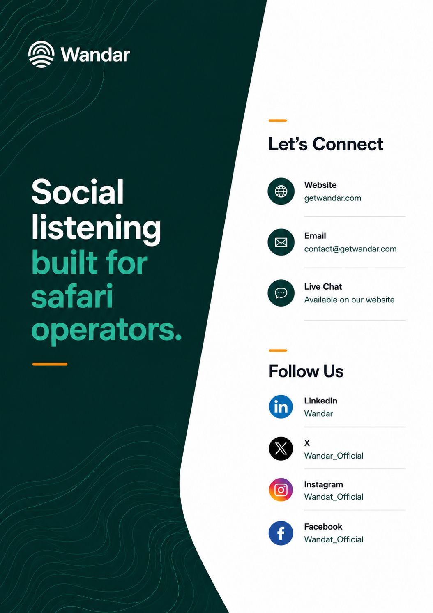

A field guide to identifying, scoring, and converting travelers who are ready to book from the public conversations they're already having.
The operator playbook for finding serious travelers in public forums before competitors do.
Boutique safari operators in East and Southern Africa.
Safari lead generation is the process of identifying potential clients who are actively researching or planning a safari trip and reaching them before they contact a competitor.
Unlike traditional advertising, which broadcasts your message to a broad audience and hopes the right people are paying attention, safari lead generation is demand-driven. It focuses on reaching travelers at the exact moment they express buying intent: when they're posting questions in travel forums, seeking operator recommendations on social media, or comparing destinations on review platforms.
The core premise is simple: demand exists before brand awareness does. Travelers are out there, right now, describing their perfect safari and asking for help planning it. The question is whether your business is positioned to find them. Or a competitor gets there first.
Most safari operators use a combination of paid search advertising, SEO, directory listings, and referral networks to generate bookings. These channels have real value, but they all share a fundamental limitation: they reach travelers who are already looking for you, or for an operator like you.
Google Ads captures intent only when the traveler is searching for specific terms. By the time someone searches "luxury safari operator Botswana," they've often already formed opinions from research conducted weeks or months earlier. You're competing for their attention after the preference is half-formed.
Referrals are excellent but limited in volume and impossible to scale predictably. Directory listings work, but you're competing on the same pages as dozens of other operators with similar profiles.
What none of these channels address is the earlier stage: the moment a traveler first articulates their intent in a forum, before they have any operator preferences, when a well-timed response from your business could be the first impression that shapes their entire decision.
The single most important insight for safari operators pursuing online lead generation is this: the travelers you most want to reach aren't browsing your website before they contact you. They're asking for advice in communities they trust.
Travelers with defined budgets, timelines, and itinerary requirements tend to congregate in forums and question-and-answer platforms where they can get authentic peer advice. These aren't casual communities. A traveler who posts a detailed safari planning question on Reddit or TripAdvisor is making a serious research investment. They're not browsing for inspiration. They're planning an actual trip.
The posts that matter most include specific signals: a stated budget ("around $6,000 per person"), a travel window ("planning for July"), a named destination ("thinking between Kenya and Tanzania"), and often a direct ask for operator recommendations. These posts are, in effect, serious inquiries broadcasting themselves in public.
Coverage matters. The platforms below are where serious planning happens. Each has its own conventions, audiences, and signal density. The first two are the most concentrated sources of serious safari inquiries online.
Not every post that mentions "safari" represents a genuine lead. Intent scoring is the process of evaluating each post against a set of criteria to determine how likely the poster is to book a trip, and how soon.
Low-intent posts tend to be retrospective (sharing a completed trip), inspirational (dreaming about safaris), or extremely vague ("which country has the best wildlife?") without any of the planning specificity that indicates imminent booking intent.
Manual intent scoring is possible but time-consuming. Automated systems like Wandar apply intent models trained specifically on safari travel content, filtering thousands of daily posts to surface only those with genuine booking signals.
Many operators begin with manual monitoring: Google Alerts for safari-related keywords, periodic Reddit browsing, occasional forum checks. This approach works at very small scale but quickly becomes untenable.
The ROI calculation is straightforward: if your average safari booking is worth $5,000–$15,000, a single automated lead per month that converts pays for the monitoring tool many times over.
Finding the lead is the first step. Converting it requires speed, expertise, and the right conversational approach.
Set up your alerts. Get there first. Win the booking. Three guides, one for each stage.
